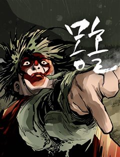
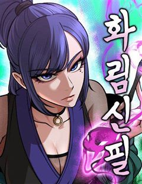
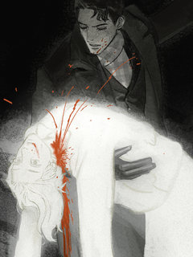

무협 어둡고 자극적인 웹툰 추천 TOP 30
무협 작품 중에서 자극적인, 다크판타지, 시리어스, 악역이주인공 같은 요소가 들어간 작품만 골랐어요. 네이버웹툰·카카오웹툰·레진코믹스에서 조건에 맞는 작품 35개 중 인기 순으로 30개를 골랐어요. 인기 TOP 3: 군림천하, 무장 - 무투전, 절대회귀
2026-10-10 기준 · 성인 작품 제외
내 취향으로 더 좁혀서 추천받기 →-
1
 카카오웹툰
카카오웹툰군림천하
"너만은 꼭 군림천하 해야 한다!” 그 한마디로 진산월의 운명이 결정됐다. 스물세 살, 그는 종남파의 장문인이 되었다. 남은 이들은 단 8명의 제자뿐. 한때 천하제일을 꿈꿨지만, 지금은 명맥만을 잇는 문파. 사부의 유지를 위해, 살아남기 위해— 진산월은 비정한 강호로 나아간다.
무협자극적인성장물액션카카오웹툰에서 보기 → -
2
 카카오웹툰
카카오웹툰무장 - 무투전
고려를 지키는 무신이라 불리는 권. 그의 어린 시절부터 이야기는 시작된다. 주인공 권과 그의 형 정은 고려에서 가장 강했던 무인이자 노비였던 만적의 아들들이다. 아버지 만적이 노비 해방 운동을 일으키지만 실패로 끝나고 죽음을 맞자 정과 권은 누군가로부터 계속해서 목숨을 위협받는다. 살…
무협자극적인복수극액션카카오웹툰에서 보기 → -
3
 네이버웹툰
네이버웹툰절대회귀
"나를 과거로 보내주시오." 이 시대에서 그를 죽일 수 없다면, 과거로 돌아가면 되리라. 시간을 거스를 수 있는 '회귀대법(回歸大法)'으로 그토록 원하던 과거로 회귀한 한 남자. 가족도, 친구도, 삶도, 모두 잃었던 '검무극(劍無極)'의 복수를 위한 첫걸음이 시작된다.
무협복수극참교육미친작화무협/사극네이버웹툰에서 보기 → -
4
 네이버웹툰
네이버웹툰마도전생기
정파무림 의천맹의 최강 살수, 천하진. 자유를 찾기 위해 탈출을 감행하지만 코앞에서 목숨을 잃고 만다. 그런데… '신교불패, 만마앙복. 삼공자님의 쾌유를 경하드리옵니다!' 무림의 공적, 마교의 삼공자로 전생해버렸다?! 정파무림 최강 비밀병기 천하진의 마도무림 정복기.
무협악역이주인공전쟁액션지금추천작네이버웹툰에서 보기 → -
5
 네이버웹툰
네이버웹툰천마육성
마교의 태왕각주 ‘사마귀’의 명령으로 화산파 출몰 지역으로 파견나간 비객조. ‘설휘’는 화산파의 절대고수 ‘구종명’에게 죽임을 당할 위기에 처한다. 그때 눈 앞에 상태창이 나타나고 정찰 임무를 받기 직전으로 회귀하게 된다. 설휘는 자신이 전생에서 죽임을 당했던 똑같은 임무를 받게 되자…
무협자극적인시리어스악역이주인공동양네이버웹툰에서 보기 → -
6
 네이버웹툰
네이버웹툰절대검감
단전이 부숴졌다는 이유로 집에서는 내놓은 자식 취급을 받던 소운휘는 혈교에 납치되어서도 삼류 첩자로 살아왔다. 어느 날, 전설로만 알려진 검선비록을 찾는데 이용당하다 죽은 운휘는 10년 전, 혈교에 납치되던 그 날로 돌아가게 되고 검의 목소리를 듣는 신비한 능력을 얻는다.
무협복수극동양이능력모험네이버웹툰에서 보기 → -
7
 카카오웹툰
카카오웹툰수라전설 독룡
유구한 역사를 자랑하는 약문(藥門)들의 잇따른 멸문지화. 시체가 산처럼 쌓이고 피가 바다처럼 흐르는 절망의 지옥에서 마침내 수라(修羅)가 눈을 뜬다. 하나도 남김없이 모두 죽일 것이다. 놈들을 전부 죽일 때까지 절대로 끝내지 않아. 약문 백화절곡의 유일한 생존자 진자강. 먼 훗날 강호…
무협자극적인복수극액션카카오웹툰에서 보기 → -
8
 네이버웹툰
네이버웹툰시한부 천재가 살아남는 법
'스물을 넘기지 못하고 단명할 운명'을 타고난 정연신. 집안사람들 모두 연신을 홀대하지만, 직접 무공을 만들 정도로 그의 실력은 대단했다. 그러던 어느 날, 연신은 자신의 수명이 얼마 남지 않았음을 알게 되는데... 시한부 천재 정연신의 살아남기 위한 고군분투가 펼쳐진다!
무협시리어스복수극정통무협동양네이버웹툰에서 보기 → -
9

-
10
 카카오웹툰
카카오웹툰인어기담
내가 바뀌고 있다. 인어 고기는 불로불사의 영약이 아니었던 걸까? 고려 말, 전쟁을 피해 도망치던 한 귀족 소녀가 살기 위해 인어 고기를 먹는 순간 그 소녀의 쌍둥이 동생, 그녀가 새로이 정착한 마을 사람들, 그녀가 운명의 짝이라 믿게 된 한 남자의 운명이 파란만장의 소용돌이 속으로…
무협자극적인복수극카카오웹툰에서 보기 → -
11
 카카오웹툰
카카오웹툰신마대제
정체불명의 살수에게 할아버지를 잃은 소년, 부은설. 복수를 위해 마도십문 무학과 피의 실전을 삼켜 무림 최강으로 거듭난다. “반드시 찾아내 죽여주마.” 지금, 천하만마의 성지에서 무림을 집어삼킬 신마(神魔)가 눈을 뜬다.
무협자극적인복수극액션카카오웹툰에서 보기 → -
12
 네이버웹툰
네이버웹툰천하제일 대사형
잔혹했던 정사대전에 반 강제적으로 끌려갔던 대사형 ‘혁무상’. 수많은 피가 흐른 전쟁에 참전한지 7년. 전쟁은 진즉 끝났음에도 돌아오지 않아 죽은 줄 알았다. 간신히 고향 땅을 밟은 혁무상이 보게 된 것은, 고작 삼류 흑도에게 핍박당해 무너져가는 고향 용호무관의 모습. 분노에 찬 혁무…
무협복수극사이다참교육환골탈태네이버웹툰에서 보기 → -
13
 네이버웹툰
네이버웹툰멸귀수도전
"내 복수는 요귀를 절멸시켜야 끝나는 거야." 부모를 죽인 요귀를 잔혹하게 효수한 이후, 마을에서 괴물이라고 손가락질 받던 소년 '이세'. 삶에 더 이상 미련이 없던 '이세'는 도깨비이자 요귀사냥꾼인 '몽련'을 만나 세상에서 요귀를 절멸시키겠다는 목표를 가지게 된다. 그렇게 시작된 몽…
무협다크판타지레드아이스 스튜디오선협오컬트판타지네이버웹툰에서 보기 → -
14
 카카오웹툰
카카오웹툰창귀무쌍
평생 전장 만을 활보하며 살아온 늙은 노병 '추이'는 자신이 죽여 온 자들의 원념에 사로잡혀 죽음에 이른다. 추이가 다시 눈을 떴을 때, 이유는 알 수 없지만 아직 무공도 배우지 못하고 쟁자수로 일하던 어린 시절로 회귀해 있었다. 다시 돌아온 추이는 전생의 인연인 호예양을 떠올리며 호…
무협자극적인복수극액션카카오웹툰에서 보기 → -
15
 네이버웹툰
네이버웹툰흑사
마교와의 마지막 전투에서 무림맹에게 배신당해 모든 전우를 잃은 흑사대장 정화… 악착같이 살아남은 그녀는 맹세한다. 전우들을 죽음으로 몰아넣은 마교와 무림맹 모두 없애버리겠다고. ”하늘이시여! 정녕 대의가 살아있다면… 죽어간 전우들의 한을 씻어낼 기회를 주소서!“
무협시리어스복수극흑백정통무협네이버웹툰에서 보기 → -
16
 네이버웹툰
네이버웹툰천씨세가의 망나니가 되었다
천씨세가의 대공자, 천무량을 평생 호위하며 충성을 다한 한 무사, 무명(無名) 하지만 천무량에게 배신당해 생을 마감한다. 그러나 다시 눈을 뜬 그는 자신을 죽인 천씨세가의 망나니 대공자, 천무량이 되어 있었다. 과거의 기억과 무공, 냉정한 판단력을 지닌 그는 망나니의 가면을 쓰고 가문…
무협복수극액션판타지액션무협/사극네이버웹툰에서 보기 → -
17

-
18

-
19
 카카오웹툰
카카오웹툰사마쌍협
"우리 가주는 무척 아둔한 사람이다." 감숙설가의 하인 자운엽은 그렇게 생각했다. 새 안주인 추산미에게 놀아나는 아둔한 가주, 그와 반대로 올곧은 성품의 큰공자 설수범. "큰공자 설수범은 내가 아는 한 가장 무서운 인간이다!" 도둑질을 하다 걸려 그에게 호되게 혼나고 망신을 당했지만,…
무협복수극액션카카오웹툰에서 보기 → -
20
 카카오웹툰
카카오웹툰괴공유록
불의의 사고로 의식을 잃었다가 잠에서 깼을 땐, 삼십 년이란 세월이 훌쩍 지난 뒤였다. 그 사이 사문인 백검문은 쇠락의 길을 걷다 무림 세력에게 멸문지화를 당했으며 사형이자 장문인이었던 진영림이 비명 했다는 비보를 듣게 되는데… 존재 자체만으로도 강호 무림이 숨을 죽인 존재였던, 검공…
무협복수극사이다미스터리액션카카오웹툰에서 보기 → -
21
 네이버웹툰
네이버웹툰사천패왕
마도천하가 도래한 날. 천하최흉의 신장(神匠)이라 불리었던. 마장(魔匠), 당세운(唐勢雲)이 죽음을 맞이하였다.
무협복수극사천당가미친작화무협/사극네이버웹툰에서 보기 → -
22
 네이버웹툰
네이버웹툰건곤불이기
건곤불이기乾坤不異記 [하늘과 땅의 이야기는 다르지 않다.] 신검神劍과 마도魔刀 강호를 호령하는 두 고수. 그중 마도魔刀의 무가 평범한 아이였던 '반통미'에게 이어진다. 그저 바보처럼 성실하고 근면하기만한 아버지에게 불만을 가졌던 '반통미'. 하지만 통미는 아버지가 얼마나 대단한 삶을…
무협시리어스정통무협동양모험네이버웹툰에서 보기 → -
23
 네이버웹툰
네이버웹툰무림사채왕
검 한자루를 벼르는데도, 제자들을 먹이고 입히는데도 아니, 숨만쉬는데도 돈이 필요한 곳. 무림. 돈이 필요한가? 신용등급이 떨어졌나? 그럼 대륙전장으로 오세요. 무담보 당일 대출 승인. 갚을 돈이 없다고? 아. 걱정하지 마세요. 몸으로도 받습니다. 힘 빼세요! 그러다 내상 입습니다!…
무협복수극동양고인물판무네이버웹툰에서 보기 → -
24
 카카오웹툰
카카오웹툰탈조클럽
지독한 빚 독촉과 고단한 배달 일상, 감사가 사라진 이 땅에서 라이더 박기별의 유일한 목표는 오직 ‘탈조선’뿐이다. 절망의 끝에서 AI 칵카투의 안내로 마주한 정체불명의 집단 ‘탈조클럽’. 자금을 지원해 주겠다는 달콤한 제안 뒤에는 기묘한 조건이 붙는다. “떠나고 싶다면, 먼저 바꿔라…
무협자극적인사이다성장물카카오웹툰에서 보기 → -
25
 카카오웹툰
카카오웹툰질풍패도
반년 만에 끝나 버린 북마교의 난(亂). 승리를 거머쥔 강호 무림, 다가올 난세를 평정하기 위해 숙적의 혼을 일깨우다. 천하 모든 마도(魔道)를 소거시키기 위한 한 남자의 무림행!
무협복수극서스펜스액션카카오웹툰에서 보기 → -
26카카오웹툰
빈궁의 이중생활
위장 잠입과 변신술의 귀재. 의금부 소속의 다모, 계서라. 자신의 진짜 신분을 숨긴 채 각종 사건을 해결해 가던 어느 날, 도성에 금혼령이 떨어진다. 세자빈을 셋이나 앞세운 세자 이 선이 네 번째 세자빈을 들인다는 것이었다. 조선 최고 불운의 아이콘으로 떠오른 세자의 금혼령으로 온 도…
무협복수극미스터리카카오웹툰에서 보기 → -
27
 네이버웹툰
네이버웹툰레베카의 기도
산업혁명의 시대, 영국 런던 구빈원 출신 레베카는 밑바닥 자신의 인생을 구원하기 위해 한 상속녀의 운명을 훔친다.
무협자극적인고자극드라마서양시대물네이버웹툰에서 보기 → -
28
 카카오웹툰
카카오웹툰전생마인
천마신교의 소교주를 지키기 위해 한계를 벗어난 수련은 거친 천마신교의 그림자. 그 공포스러운 그림자들 중 역사 상 최초로 극마의 고수가 등장했다. 소교주를 지키기 위해 강해지라 했다. 그것이 소교주를 지키는, 그림자의 숙명이라고 그렇게 한 평생을 그것을 위해 살았다. 내가 죽던 그 날…
무협복수극개그액션카카오웹툰에서 보기 → -
29

네이버웹툰화림신필
노비 출신 ‘무영’은 일평생을 쌓아온 자신의 독창적인 그림을 소가주 ‘황 휘’에게 빼앗긴 뒤 소가주의 그림을 훔쳤다는 누명까지 쓰게 된다. 무영은 빼앗긴 자신의 정체성을 되찾기 위해 정파 기득권을 향한 복수를 다짐한다.
무협복수극2026 연재직행열차액션판타지소년물네이버웹툰에서 보기 → -
30

레진코믹스불사의 저주
17세기 러시아의 봉건귀족의 최상층 보야르인 겐나디와 마녀 사이에서 태어난 아이, 지나이다 이곳은 아이가 태어나면 축복을 빌어준다. 지나이다 또한 자신의 아버지이 겐나디에게 영생을 살 수 있는 축복 아닌 저주를 받던 날, 묘연하게 자취를 감춘 그녀의 어머니. 그렇게 지나이다는 어느 시…
무협복수극환생회귀스릴러레진코믹스에서 보기 →